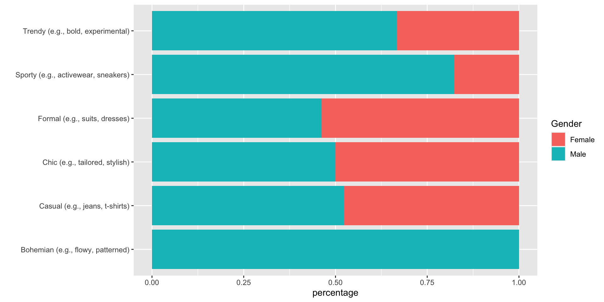
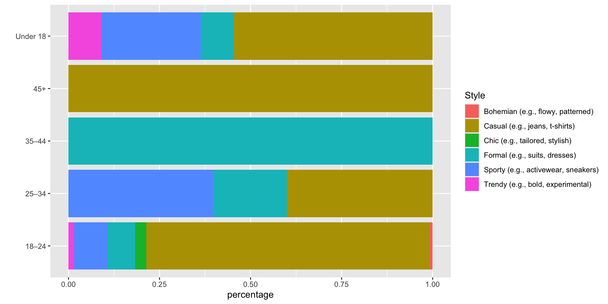
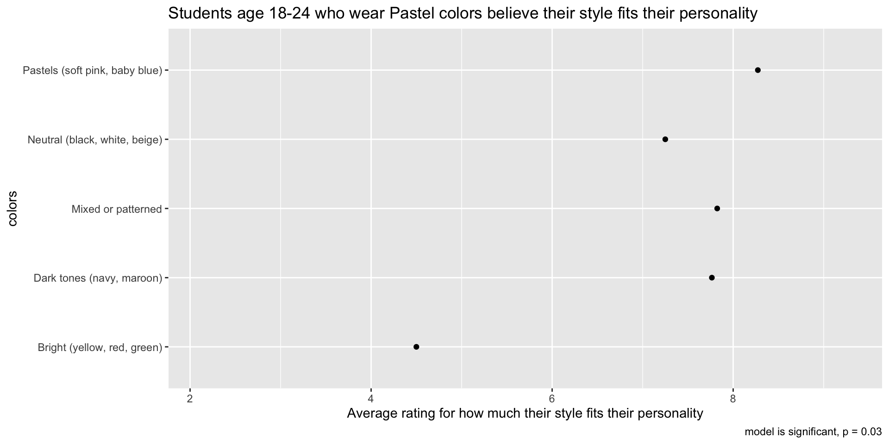
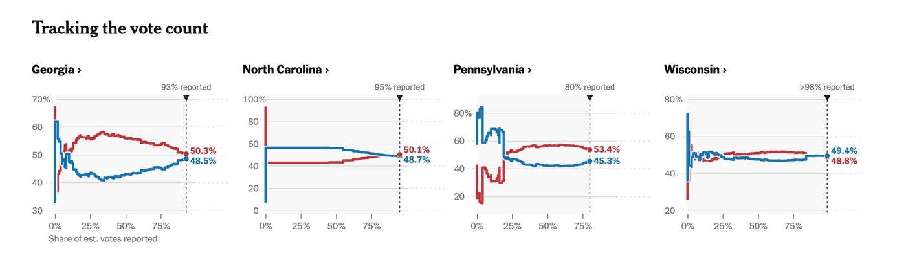
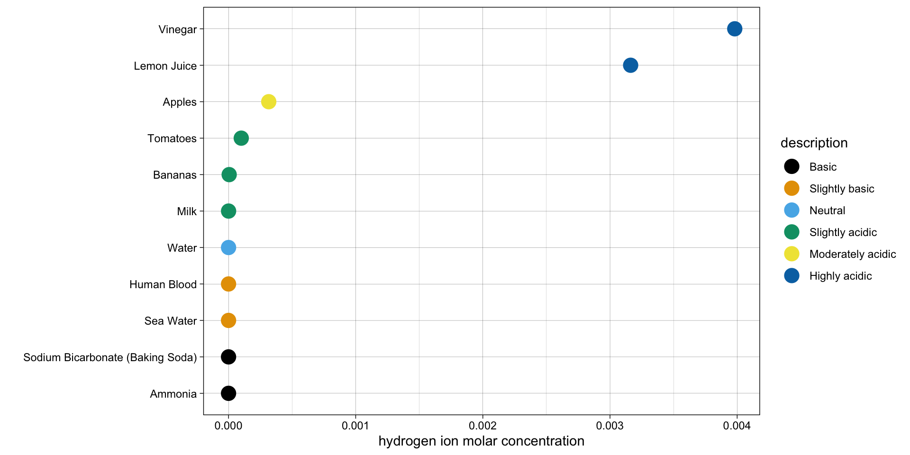
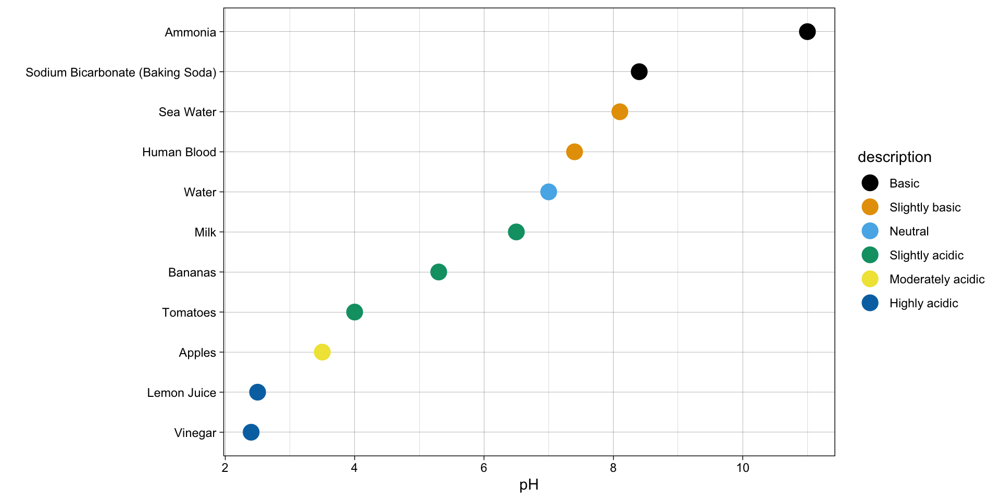

How not to lie with statistics
Small Sample Size or Sample Bias
- Beware of inaccurate generalizations
- Small sample size might not represent the entire population
- Sampling choice might favor certain groups
Data Context
- Timeframe of the data – “trends”, “recently” – when? what period of time?
- Who collected the data? What was the purpose of data collection?
Data Quality
- Data collection bias – Which one of these do you prefer? vs. Do you think X is better?
- Data processing bias – selecting data that supports hypothesis
- Wrangling bias or errors – how were variables coded?
Practice
Download the Fashion Dataset, inspect it, and answer the following questions:
- Who collected the data?
- How was the data collected?
- When was the data collected?
- Who is represented in the data? (what is the population this was sampled from?)
- Are there any outliers? What do they mean?
Practice
Who is represented in the data?
| 18–24 |
132 |
| 25–34 |
5 |
| 35–44 |
1 |
| 45+ |
1 |
| Under 18 |
11 |
Practice
Who is represented in the data?
Practice
Who is represented in the data?
| Freelancer |
2 |
| Office Worker |
4 |
| Other |
4 |
| Student |
140 |
Practice
Who is represented in the data?
| 18–24 |
Student |
61 |
67 |
| 25–34 |
Office Worker |
1 |
1 |
| 25–34 |
Other |
2 |
0 |
| 35–44 |
Other |
1 |
0 |
| Under 18 |
Student |
2 |
9 |
| 18–24 |
Freelancer |
0 |
1 |
| 18–24 |
Office Worker |
0 |
2 |
| 18–24 |
Other |
0 |
1 |
| 25–34 |
Student |
0 |
1 |
| 45+ |
Freelancer |
0 |
1 |
Descriptive Stats
- Measures of centrality (mean, median, mode) might differ, showing different aspects of the data
- Measures of variability (standard deviation) can give us more information that measures of centrality alone cannot
- Question to ask: Why were the measures displayed chosen?
Descriptive Stats – practice
What are the problems with the table below? How would you fix it?
| 18–24 |
7 |
| 25–34 |
8 |
| 35–44 |
4 |
| 45+ |
0 |
| Under 18 |
8 |
Inferential Stats
- What tests and models were run?
- How many tests and models were run?
The more statistical tests are run, the greater the probability of finding false positives (Type I errors) just by chance.
Inferential Stats
Remember that for the standard p-value threshold (alpha) of 0.05, we are accepting a 5% chance of finding a significant result when there isn’t one. If we run 20 independent tests, our probability of getting no false positives for all 20 tests is 36%.
- P(getting a false positive for one test) = 0.05
- P(not getting a false positive for one test) = 1 - 0.05 = 0.95
- P(no false positives for all 20 tests) = \(0.95^{20}\) = 0.36
Inferential Stats – issues
- P-hacking: Running many tests until finding a statistically significant result
- Cherry-Picking: Selecting and reporting only whatever supports their hypothesis
- HARKing: Hypothesizing After Results are Known
- Data dredging: Exploring data without pre-specified hypotheses
- Fishing Expeditions: Examining associations between different combinations of variables with the hope of finding something that is statistically significant
Inferential Stats – fixes
- Bonferroni correction – calculate new α (alpha) by dividing original α by the number of tests (n) ran (more conservative)
- Benjamini-Hochberg – order all p-values from smallest to largest, calculate critical value of each p-value, find the largest p-value that is less than its critical value (less conservative)
Visualizations
- Different scales for comparison across different plots
- Different baselines
- Stretching or shrinking the scale to minimize or highlight changes
- Percentages do not indicate actual counts or raw numbers
- Percentages of percentages (nested percentages)
Visualizations – find the issues

Visualizations – find the issues

Results
- Effect size vs. significance
- Correlation is not Causation
Results – find the issues
Multinomial logistic regression was run with age as the response variable and footwear as a predicting variable. Here are the conditional probabilities:
| Boots |
0.92 |
0.08 |
0.00 |
0.00 |
| Heels/Loafers |
0.83 |
0.17 |
0.00 |
0.00 |
| Other |
0.88 |
0.00 |
0.00 |
0.12 |
| Sandals/Flats |
0.80 |
0.07 |
0.07 |
0.07 |
| Sneakers |
0.90 |
0.02 |
0.00 |
0.08 |
Results – find the issues

Practice
What are the issues with these analysis results from the 2020 US presidential elections?

Linear Scale – concentration
pH scale is logarithmic: an increase or decrease of an integer value changes the concentration by a tenfold

Log Scale – pH values
pH scale is logarithmic: an increase or decrease of an integer value changes the concentration by a tenfold

Final advice
- Be skeptical about other people’s results
- Be honest about your results